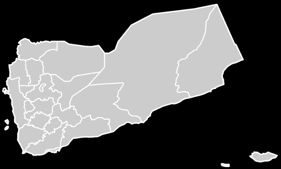
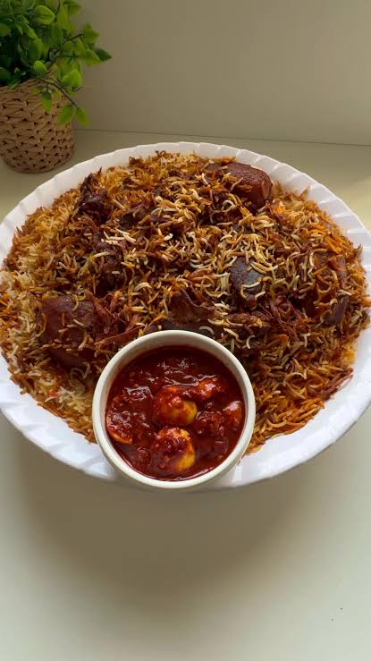
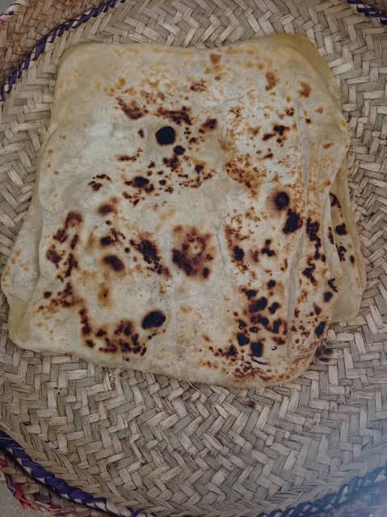
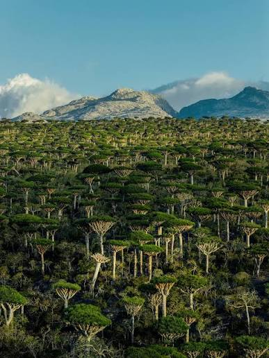
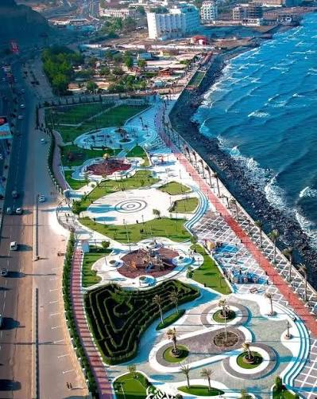

- CountryYemen
- CapitalSana'a City
- LanguageArabic
- CurrencyRial
"الحياة للشجعان! فالمؤمن القوي خيرٌ من المؤمن الضعيف"

"الحياة للشجعان! فالمؤمن القوي خيرٌ من المؤمن الضعيف"

Spiced rice cooked with meat in one pot until everything is tender and full of flavor.
A rich stew of lamb or beef, cooked slowly until it falls apart and eaten with Yemeni flatbread.

A hearty meat dish cooked with spices, served with bread or rice.

A remote island with dragon's blood trees, white sand beaches and wildlife seen nowhere else.

A walled old city of tall tower houses, narrow lanes and busy markets, one of the oldest lived-in cities in the world.

A port city on the Arabian Sea, built around an old volcano crater, with beaches and a historic harbor.